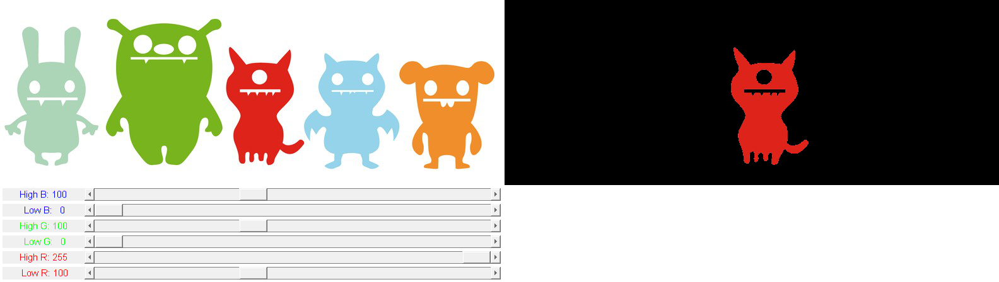

inRange Thresholding Operations
In this demo, we show how to:
- Perform basic thresholding operations using OpenCV function cv.inRange
- Detect an object based on the range of pixel values it has
For improving detection by color, it is common to perform thresholding in other colorspaces like HSV or LAB, where luma and chroma are represented separately.
Sources:
function varargout = threshold_inrange_demo_gui(im) % load source image if nargin < 1 src = cv.imread(fullfile(mexopencv.root(),'test','monster.jpg')); elseif ischar(im) src = cv.imread(im); else src = im; end validateattributes(src, {'uint8'}, {'size',[NaN NaN 3]}); % create the UI h = buildGUI(src); if nargout > 0, varargout{1} = h; end end function onType(~,e,h) %ONTYPE Event handler for key press on figure % handle keys switch e.Key case 'h' helpdlg({ 'Hot keys:' 'h - this help dialog' 'q - quit the program' 's - save thresholded image' }); case {'q', 'escape'} close(h.fig); case {'s', 'space'} % save image img = get(h.img(2), 'CData'); fname = fullfile(tempdir(), ... sprintf('out_%s.png', datestr(now(),'yyyymmddTHHMMSS'))); cv.imwrite(fname, img); disp(['Saved ' fname]); end end function onChange(~,~,h) %ONCHANGE Event handler for UI controls % retrieve current values from UI controls rlo = round(get(h.slid(1), 'Value')); rhi = round(get(h.slid(2), 'Value')); glo = round(get(h.slid(3), 'Value')); ghi = round(get(h.slid(4), 'Value')); blo = round(get(h.slid(5), 'Value')); bhi = round(get(h.slid(6), 'Value')); % permform thresholding lowerb = min([rlo glo blo], [rhi ghi bhi]); upperb = max([rlo glo blo], [rhi ghi bhi]); mask = cv.inRange(h.src, lowerb, upperb); % apply mask out = cv.copyTo(h.src, 'Mask',mask); % update UI and show result set(h.txt(1), 'String',sprintf(' Low R: %3d',rlo)); set(h.txt(2), 'String',sprintf('High R: %3d',rhi)); set(h.txt(3), 'String',sprintf(' Low G: %3d',glo)); set(h.txt(4), 'String',sprintf('High G: %3d',ghi)); set(h.txt(5), 'String',sprintf(' Low B: %3d',blo)); set(h.txt(6), 'String',sprintf('High B: %3d',bhi)); set(h.img(2), 'CData',out); drawnow; end function h = buildGUI(img) %BUILDGUI Creates the UI % parameters sz = size(img); rlo = 100; rhi = 255; glo = 0; ghi = 100; blo = 0; bhi = 100; % build the user interface (no resizing to keep it simple) h = struct(); h.src = img; h.fig = figure('Name','Threshold Demo', ... 'NumberTitle','off', 'Menubar','none', 'Resize','off', ... 'Position',[200 200 sz(2)*2 sz(1)+155-1]); if ~mexopencv.isOctave() %HACK: not implemented in Octave movegui(h.fig, 'center'); end imgs = {img, false(sz(1:2))}; for i=1:numel(imgs) h.ax(i) = axes('Parent',h.fig, 'Units','pixels', ... 'Position',[1+sz(2)*(i-1) 155 sz(2) sz(1)]); if ~mexopencv.isOctave() h.img(i) = imshow(imgs{i}, 'Parent',h.ax(i)); else %HACK: https://savannah.gnu.org/bugs/index.php?45473 axes(h.ax(i)); h.img(i) = imshow(imgs{i}); end end h.txt(1) = uicontrol('Parent',h.fig, 'Style','text', ... 'Position',[5 5 130 20], 'FontSize',11, 'ForegroundColor','r', ... 'String',sprintf(' Low R: %3d',rlo)); h.txt(2) = uicontrol('Parent',h.fig, 'Style','text', ... 'Position',[5 30 130 20], 'FontSize',11, 'ForegroundColor','r', ... 'String',sprintf('High R: %3d',rhi)); h.txt(3) = uicontrol('Parent',h.fig, 'Style','text', ... 'Position',[5 55 130 20], 'FontSize',11, 'ForegroundColor','g', ... 'String',sprintf(' Low G: %3d',glo)); h.txt(4) = uicontrol('Parent',h.fig, 'Style','text', ... 'Position',[5 80 130 20], 'FontSize',11, 'ForegroundColor','g', ... 'String',sprintf('High G: %3d',ghi)); h.txt(5) = uicontrol('Parent',h.fig, 'Style','text', ... 'Position',[5 105 130 20], 'FontSize',11, 'ForegroundColor','b', ... 'String',sprintf(' Low B: %3d',blo)); h.txt(6) = uicontrol('Parent',h.fig, 'Style','text', ... 'Position',[5 130 130 20], 'FontSize',11, 'ForegroundColor','b', ... 'String',sprintf('High B: %3d',bhi)); h.slid(1) = uicontrol('Parent',h.fig, 'Style','slider', ... 'Position',[135 5 sz(2)-135-5 20], 'Value',rlo, ... 'Min',0, 'Max',255, 'SliderStep',[1 20]./(255-0)); h.slid(2) = uicontrol('Parent',h.fig, 'Style','slider', ... 'Position',[135 30 sz(2)-135-5 20], 'Value',rhi, ... 'Min',0, 'Max',255, 'SliderStep',[1 20]./(255-0)); h.slid(3) = uicontrol('Parent',h.fig, 'Style','slider', ... 'Position',[135 55 sz(2)-135-5 20], 'Value',glo, ... 'Min',0, 'Max',255, 'SliderStep',[1 20]./(255-0)); h.slid(4) = uicontrol('Parent',h.fig, 'Style','slider', ... 'Position',[135 80 sz(2)-135-5 20], 'Value',ghi, ... 'Min',0, 'Max',255, 'SliderStep',[1 20]./(255-0)); h.slid(5) = uicontrol('Parent',h.fig, 'Style','slider', ... 'Position',[135 105 sz(2)-135-5 20], 'Value',blo, ... 'Min',0, 'Max',255, 'SliderStep',[1 20]./(255-0)); h.slid(6) = uicontrol('Parent',h.fig, 'Style','slider', ... 'Position',[135 130 sz(2)-135-5 20], 'Value',bhi, ... 'Min',0, 'Max',255, 'SliderStep',[1 20]./(255-0)); % hook event handlers, and trigger default start opts = {'Interruptible','off', 'BusyAction','cancel'}; set(h.slid, 'Callback',{@onChange,h}, opts{:}); set(h.fig, 'WindowKeyPressFcn',{@onType,h}, opts{:}); onChange([],[],h); end